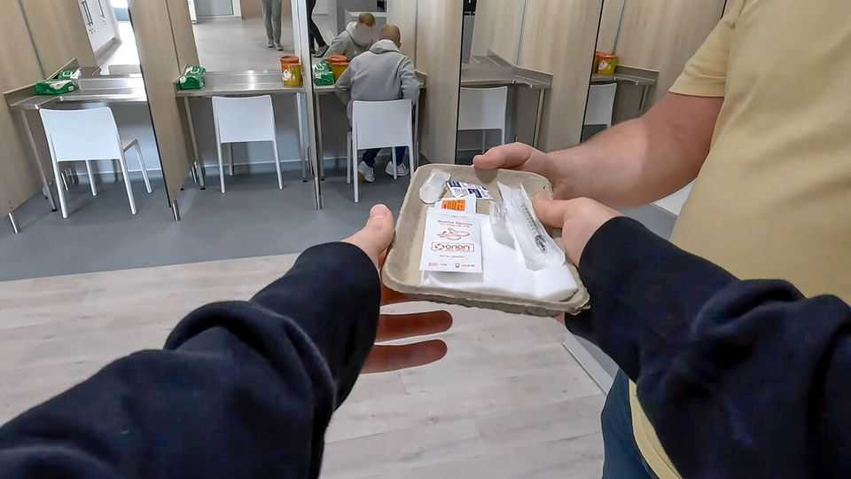
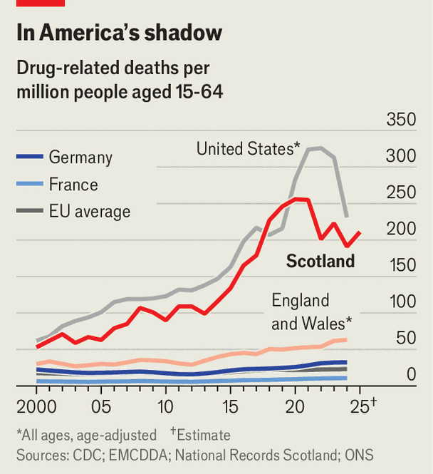

How to fix Scotland’s drugs disaster
Efforts to get Scots off drugs need to be stepped up

Aug 13th 2026
FOR FOUR days David Rowat lay dying in his flat in East Kilbride. “Every rock bottom is a trap door,” says the former heroin addict. “You need to be in the darkest, lowest place to want change.” When his daughter discovered him in 2021, only a few hours of oxygen remained in his blood.
Five years ago Scotland sought to end its reputation as the drug-death capital of Europe (see chart). Yet after spending an extra £250m ($336m), it wears that crown for the seventh year in a row. And although its 1,017 drug-misuse deaths in 2024 was the lowest tally since 2017, last year the number rose again, by about 8%.

Some critics think Scotland puts too much weight on “harm reduction”—managing rather than curing addicts. “We have built a system that is very good at keeping people alive inside addiction, but not nearly good enough at helping them leave it,” argues Annemarie Ward of Faces & Voices of Recovery UK, a charity. But harm reduction remains essential. Police carry naloxone to prevent overdoses in the street. Last year Glasgow opened Britain’s first drug-consumption room (DCR) for a three-year pilot: addicts can take drugs under medical supervision. It has prevented about 200 overdose deaths. Patients can also get blood tests, hot showers and referrals to health and other services.
Around 200 such sites exist worldwide; Edinburgh has plans to build some. Steve Rolles, a drug-policy analyst, says that Scotland needs dozens of DCRs, and cheaper mobile ones too. “It’s a false economy to think you’re saving money by not investing in it today.”
Roughly 44,000 Scots have an opioid dependence. Glasgow, where the death rate is highest, has just 23 publicly funded beds for rehab. Burnt-out staff prioritise emergency cases and short-term targets.
Relapse is common. Ross McKenzie, a small-business owner, had to go to Italy to get clean. Four years of free recovery in a rural commune rid him of a heroin addiction, whereas brief stints at a pricey detox centre in Aberdeen left him to relapse twice. “It got the drugs out of my system,” he says, “but the time was nowhere near enough to actually start healing.”
Part of the solution is giving Scots alternatives to pills and needles. Schools have started to invest in leisure facilities. Poverty makes the job harder: the poorest Scots are much more likely to die of substance abuse. And drugs have become easier to acquire. You no longer have to wait on a street corner, confides one ex-addict, for a dealer to appear. Users of social media can order chemical highs to their door.
Chemicals are deadlier, too. Scots are mixing cocktails of different drugs. The rise of drugs laced with nitazenes is alarming. The synthetic opioids, up to 500 times more potent than fentanyl, have been detected in benzodiazepine pills (“benzos”) which sell for as little as 50 pence each. Last year police discovered Britain’s first nitazene lab in west Scotland.
So what else might help? “I’ve never seen anything that works like a recovery café,” says Mr Rowat, who now volunteers at one in Glasgow. He has been clean for three years and is looking for paid work. Regular meetings with recovered addicts, and a strict programme of abstinence, helped restore his hope and health.
Every week thousands of Scots visit such centres. But more need to, and funding for long-term care is limited. Drug harm costs Scotland around £6bn a year. Investing in the infrastructure for addicts to get clean would be economical as well as compassionate. ■